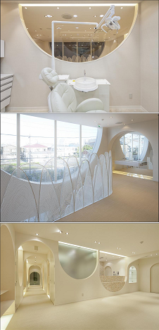
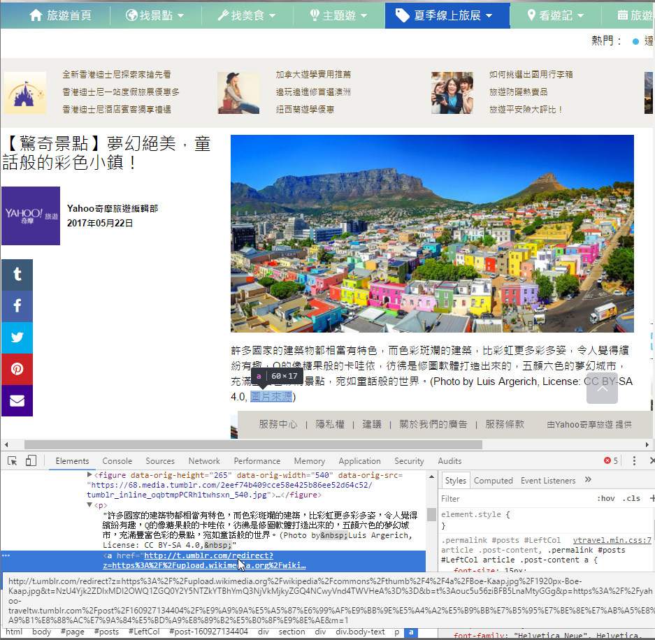
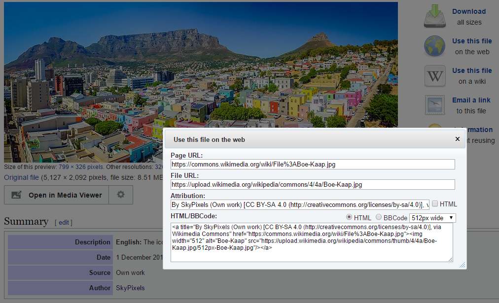
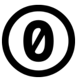

「著作」與「利用」如何使用創用CC來標示
一、創用CC有四種授權要素
1、姓名標示 Attribution (BY)
簡述：您必須按照著作人或授權人所指定的方式，表彰其姓名。
2、非商業性 NonCommercial (NC)
簡述：您不得因獲取商業利益或私人金錢報酬為主要目的來利用作品。
3、禁止改作 NoDerivatives (ND)
您僅可重製作品不得變更、變形或修改
4、相同方式分享 ShareAlike (SA)
若您變更、變形或修改本著作，則僅能依同樣的授權條款來散布該衍生作品
二、創用CC由四種授權要素可組合出有六種授權條款
1、CC BY

簡述：本授權條款允許使用者重製、散布、傳輸以及修改著作（包括商業性利用），惟使用時必須按照著作人或授權人所指定的方式，表彰其姓名。
授權限制：
姓名標示 — 你必須給予 適當表彰、提供指向本授權條款的連結，以及 指出（本作品的原始版本）是否已被變更。你可以任何合理方式為前述表彰，但不得以任何方式暗示授權人為你或你的使用方式背書。
不得增加額外限制 — 你不能增設法律條款或科技措施，來限制別人依授權條款本已許可的作為。
授權條款法律文字：https://creativecommons.org/licenses/by/3.0/tw/legalcode
2、CC BY-SA

簡述：本授權條款允許使用者重製、散布、傳輸以及修改著作（包括商業性利用）。若使用者修改該著作時，僅得依本授權條款或與本授權條款類似者來散布該衍生作品。使用時必須按照著作人指定的方式表彰其姓名。
授權限制：
姓名標示 — 你必須給予 適當表彰、提供指向本授權條款的連結，以及 指出（本作品的原始版本）是否已被變更。你可以任何合理方式為前述表彰，但不得以任何方式暗示授權人為你或你的使用方式背書。
相同方式分享 — 若你重混、轉換本素材，或依本素材建立新素材，你必須依本素材的授權條款來散布你的貢獻物。
不得增加額外限制 — 你不能增設法律條款或科技措施，來限制別人依授權條款本已許可的作為。
授權條款法律文字：https://creativecommons.org/licenses/by-sa/3.0/tw/legalcode
3、CC BY-ND

簡述：本授權條款允許使用者重製、散布、傳輸著作（包括商業性利用），但不得修改該著作。使用時必須按照著作人指定的方式表彰其姓名。
授權限制：
姓名標示 — 你必須給予 適當表彰、提供指向本授權條款的連結，以及 指出（本作品的原始版本）是否已被變更。你可以任何合理方式為前述表彰，但不得以任何方式暗示授權人為你或你的使用方式背書。
禁止改作 — 若你重混、轉換本素材，或依本素材建立新素材，則你不得散布改作後的素材。
不得增加額外限制 — 你不能增設法律條款或科技措施，來限制別人依授權條款本已許可的作為。
授權條款法律文字：https://creativecommons.org/licenses/by-nd/3.0/tw/legalcode
4、CC BY-NC

簡述：本授權條款允許使用者重製、散布、傳輸以及修改著作，但不得為商業目的之使用。使用時必須按照著作人指定的方式表彰其姓名。
授權限制：
姓名標示 — 你必須給予 適當表彰、提供指向本授權條款的連結，以及 指出（本作品的原始版本）是否已被變更。你可以任何合理方式為前述表彰，但不得以任何方式暗示授權人為你或你的使用方式背書。
非商業性 — 你不得將本素材進行商業目的之使用。
不得增加額外限制 — 你不能增設法律條款或科技措施，來限制別人依授權條款本已許可的作為。
授權條款法律文字：https://creativecommons.org/licenses/by-nc/3.0/tw/legalcode
5、CC BY-NC-SA

簡述：本授權條款允許使用者重製、散布、傳輸以及修改著作，但不得為商業目的之使用。若使用者修改該著作時，僅得依本授權條款或與本授權條款類似者來散布該衍生作品。使用時必須按照著作人指定的方式表彰其姓名。
授權限制：
姓名標示 — 你必須給予 適當表彰、提供指向本授權條款的連結，以及 指出（本作品的原始版本）是否已被變更。你可以任何合理方式為前述表彰，但不得以任何方式暗示授權人為你或你的使用方式背書。
非商業性 — 你不得將本素材進行商業目的之使用。
相同方式分享 — 若你重混、轉換本素材，或依本素材建立新素材，你必須依本素材的授權條款來散布你的貢獻物。
不得增加額外限制 — 你不能增設法律條款或科技措施，來限制別人依授權條款本已許可的作為。
授權條款法律文字：https://creativecommons.org/licenses/by-nc-sa/3.0/tw/legalcode
6、CC BY-NC-ND

簡述：本授權條款允許使用者重製、散布、傳輸著作，但不得為商業目的之使用，亦不得修改該著作。使用時必須按照著作人指定的方式表彰其姓名。
授權限制：
姓名標示 — 你必須給予 適當表彰、提供指向本授權條款的連結，以及 指出（本作品的原始版本）是否已被變更。你可以任何合理方式為前述表彰，但不得以任何方式暗示授權人為你或你的使用方式背書。
非商業性 — 你不得將本素材進行商業目的之使用。
禁止改作 — 若你重混、轉換本素材，或依本素材建立新素材，則你不得散布改作後的素材。
不得增加額外限制 — 你不能增設法律條款或科技措施，來限制別人依授權條款本已許可的作為。
授權條款法律文字：https://creativecommons.org/licenses/by-nc-nd/3.0/tw/legalcode
三、「著作」與「利用」如何使用創用CC來標示
舉例說明
1、宣告格式
著作名稱由標示作者姓名製作，以創用CC 姓名標示 4.0 國際 授權條款釋出。
此作品衍生自原始著作網址。
超出此條款範圍外的授權可於其他授權方式網址查閱。
不管是自已的作品要使用創用CC授權宣告，
或是利用他人創用CC授權的作品需要作授權宣告，
其格式都是一樣的，格式的產生請參考授權精靈。
2、另一宣告格式

Photo, Photo, Photo by Keisuke Miyamoto / CC BY 2.0
3、引用創用CC授權的例子
我看到一個Yahoo奇摩旅遊編輯部的一個引用創用CC授權的例子，
https://yahoo-traveltw.tumblr.com/post/160927134404/驚奇景點夢幻絕美童話般的彩色小鎮

其引用一張圖片，授權宣告只有短短一行「(Photo by Luis Argerich, License: CC BY-SA 4.0, 圖片來源)」
而該超連結內容長長一串，我幫大家整理一下格式為
http://t.umblr.com/redirect?z=https://upload.wikimedia.org/wikipedia/commons/thumb/4/4a/Boe-Kaap.jpg/1920px-Boe-Kaap.jpg
&t=NzU4Yjk2ZDIxMDI2OWQ1ZGQ0Y2Y5NTZkYTBhYmQ3NjVkMjkyZGQ4NCwyVnd4TWVHeA==
&b=t:ouc5u56ziBFB5LnaMtyGGg
&p=https://yahoo-traveltw.tumblr.com/post/160927134404/驚奇景點夢幻絕美童話般的彩色小鎮&m=1
整個宣告必須要寫進去的內容都有，圖片來源的超連結也會轉址到
https://upload.wikimedia.org/wikipedia/commons/thumb/4/4a/Boe-Kaap.jpg/1920px-Boe-Kaap.jpg
已知CC BY-SA的其中一項授權限制為
姓名標示 — 你必須給予 適當表彰、提供指向本授權條款的連結，以及 指出（本作品的原始版本）是否已被變更。你可以任何合理方式為前述表彰，但不得以任何方式暗示授權人為你或你的使用方式背書。
這符合規範基本上是沒問題的，但我很好奇Photo by Luis Argerich，
Luis Argerich是何許人也，是不是真的有這個人？也無從查起，輾轉查到出處原來是
https://commons.wikimedia.org/wiki/File:Boe-Kaap.jpg

來源出處也有明白指出當要引用這張圖片，其格式可以如何地引用，
但也明白指出作品的擁有者是SkyPixels，
所以如果Yahoo奇摩旅遊編輯部被問到而無法作合理的說明，嚴格來說則恐有侵權疑慮。
四、公眾領域
創用CC還推出了兩種標示工具
1、「公眾領域貢獻宣告」（CC0，Public Domain Dedication）

CC0提供一種｢不保留權利｣的授權選擇，讓權利人能選擇不受著作權及資料庫相關法律保護，也不享有法律直接提供給創作人的排他權。
2、公眾領域標章（PDM，Public Domain Mark）
PDM的功能即如標籤般，讓前述機構及其他瞭解作品著作權狀態的人，能傳達該等作品已不再受著作權限制，因而得供大眾無償使用。
兩者最大差別是
CC0在法律面來說，會改變該作品的著作權狀態，有效地以全球為範圍，拋棄所有的著作權及其相關或鄰接權；公眾領域標章則僅具有標籤的功能，標示該作品在全球均不受已知著作權的限制。
參考資料：
Marking your work with a CC license
Best practices for attribution
ImageStamper - 這個公正第三人的網站服務，來保存您所使用的著作上網頁的授權資訊
Internet Archive - 用來查看著作的來源網址在過去特定日期時的內容